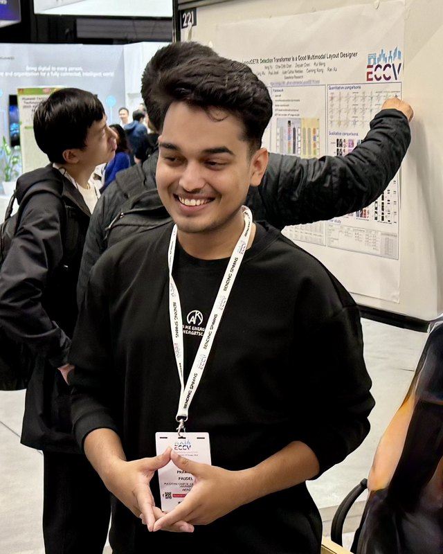

Pramish Paudel
I am a researcher at INSAIT, where I am fortunate to work with Prof. Luc Van Gool and Prof. Dr. Danda Pani Paudel.
I work on AI models that learn an accurate dynamic representation of the world from video and use it to plan. I believe such a representation needs three properties:
- the notion of objects emerges;
- appearance and motion are disentangled;
- objects persist when hidden (object permanence).
My latest work, iSEE, learns all three from video without labels.
I did my B.E. in Computer Engineering at Pulchowk Campus, Tribhuvan University, Nepal. My thesis was published at ECCV 2024 as iHuman, the first-ever top-tier computer vision conference paper from a Nepalese institute.
I am applying to PhD programs for Fall 2027.
E-mail: pramish[dot]paudel[at]gmail[dot]com

Publications
* equal contribution
-
iSEE: Object Permanence Through Self-Supervision
A self-supervised method that learns object permanence from video without labels; within 4.1 mAP of a supervised tracker on LA-CATER.
-
Vision Transformers Need Cross Aggregation for Patch Semantics (CALiT)
A loss on the CLS token sends most ViT patches nearly the same gradient. Cross aggregation fixes this and sharpens patch features, for 0.6% extra FLOPs on ViT-S.
-
iARCS: Iterative Agentic RL for Controllable 3D Scene Generation
Agentic RL that steers 3D scene generators toward language-specified constraints.
-
iADD: Improving Alignment and Diversity in Diffusion Policy Optimization
RL post-training that improves both alignment and diversity of diffusion models.
-
SceneBench: A Hierarchical Benchmark for Vision-Language Understanding of 3D Scenes
A benchmark for vision-language understanding of 3D scenes.
-
iHuman: Instant Animatable Digital Humans From Monocular Videos
Animatable 3D human reconstruction from monocular video. My undergraduate thesis.
Honors & Awards
- INSAIT Summer Undergraduate Research Fellowship (SURF), 2024. Fully funded research fellowship for undergraduates worldwide; acceptance rate under 2%.
- University Grants Commission (UGC) Grant, 2023. Brought ~US$30K from UGC Nepal to my department for my project; one of 18 recipients across Nepal.
- Hult Prize Global Accelerator, Boston, 2022. Won the regional summit with MeasureMe.AI and reached the top 16 of 30,000+ teams competing for the US$1 million prize.
- Merit-based Scholarship, 2021. Awarded for one semester, Department of Electronics and Computer Engineering, Pulchowk Campus.
Academic Service
- Reviewer: ICLR, IEEE RA-L, ACM TOMM